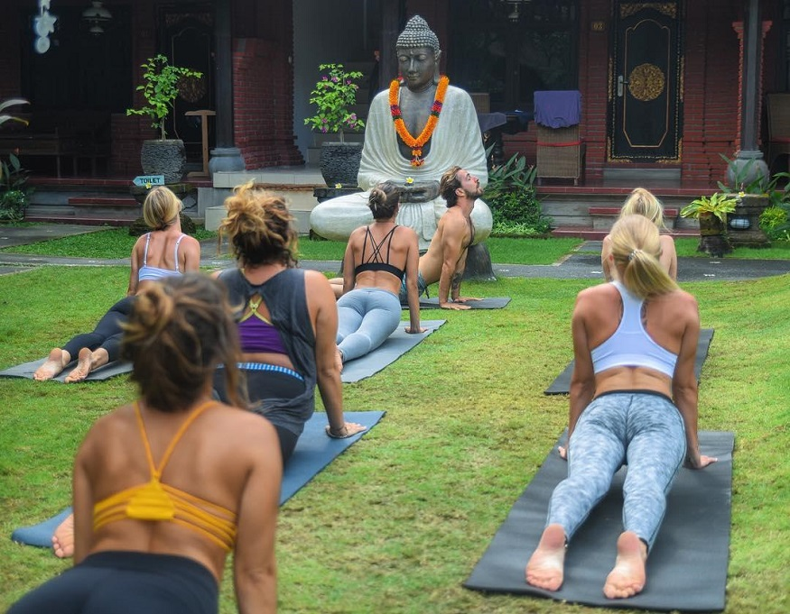

Where to stay in Bali: a neighbourhood guide
Bali is the Indonesian island paradise where the vibe is always chilled, the surf is always up and the smoothie bowls are always insta-ready. From buzzing nightlife strips to peaceful mountain towns, we’ve got the lowdown on the best area to stay in Bali.
Bali has just about everything that sets a backpacker’s heart racing. For starters, it’s one of the most spectacularly beautiful places on earth, with cascading waterfalls, green rice terraces, sacred temples and idyllic beaches providing a killer backdrop for your adventures. The food is to die for, with veggie, vegan and health food cafes on every corner and flavoursome Indonesian classics like nasi goreng available for pennies. Come to mention it, everything in Bali is pretty cheap – including out-of-this-world hostels where epic swimming pools and daily yoga classes are the norm. Is it any wonder that so many backpackers find it impossible to leave this laid-back lifestyle when their biggest worry is where they left their moped keys?
It may be a small island, but each area of Bali has its own distinct personality. From the crazy clubs of Kuta to the zen vibes of Ubud and the hip crowd of Canggu, Bali is no one trick pony. Each of the three Gili Islands is totally unique too – you could spend your morning diving around Gili Air, party the night away on Gili T and recover the next day on Gili Meno’s peaceful shores. Most travellers will discover an area they love the most, but hey, there’s no need to play favourites when every bit of Bali is so great!
The best way of getting around in Bali is by scooter, and it doesn’t get much more fun than cruising around town at your own pace, catching those rays and visiting attractions whenever you darn well please. Just be sure to always wear a helmet! You can rent a scooter for as little as £2.50 per day, and petrol is insanely cheap… don’t be surprised if it’s dispensed from a vodka bottle! For longer journeys and transporting luggage, taxis and minibuses are also easily available for a reasonable price. Staff at your hostel can assist in booking transport from one part of Bali to another.
Wondering which area of Bali is gonna steal your heart? Well without further ado, here’s our guide on where to stay in Bali.
Jump straight to:
Kuta: the best area in Bali to party like a rock star
Ubud: the best area in Bali for spiritual experiences
Seminyak: the best area in Bali to spoil yourself
Canggu: the best area in Bali to hang with hipsters

1. Kuta – the best area in Bali to party like a rock star
Thanks to its closeness to the airport, most traveller’s first encounter with Bali is in the party-loving beach destination Kuta in the south of the island. Remember what we said about each part of Bali having its own distinct flavour? Well, put all those images from ‘Eat, Pray, Love’ to one side for a second – Kuta is less downward dog, more sex on the beach.
Picture busy, colourful streets painted with vibrant street art, abuzz with people and lined with shops, tattoo parlours and bars. Kuta is Bali’s hottest nightlife spot and it truly comes alive after dark. It’s often compared to Ibiza for Aussies, so expect crowds, loud music and some rather hazy nights. But hey, you can always doze off your hangover on the beach next day… and if all else fails you’ll soon be off rejuvenating your mind, body and soul in Ubud!
Is Kuta the most authentic, cultural spot in Bali? No. Is it somewhere to have one hell of a good time? Absolutely.

What to do in Kuta
Did we mention the nightlife? Kuta is a place that takes partying pretty seriously, with everything from mega-clubs to beach bars and live music venues lining its main strip. Things don’t really kick off till after midnight, but you need to head out early to catch the best deal in town at Kuta’s biggest nightclub, Sky Garden. Between 5-9pm their roof terrace is full of backpackers taking full advantage of their unlimited beers, cocktails and all you can eat buffet for 99,000 IDR – that’s less than £5.50!! We bet you’ve never stuffed your face with mashed potato in the club before but there’s a first time for everything! Afterwards, head to Apache Reggae Bar for a chilled crowd, good music and cheap drinks before seeing where the night takes you.
Though not one of Bali’s most beautiful, Kuta beach is a cool place to hang out with a Bintang in hand and catch one of those famous island sunsets. Music is pumped through sound systems and the atmosphere is fun and sociable. It’s also a great spot for beginners to try their hands at surfing, with plenty of instructors along the shore offering lessons at a bargain rate. When in Bali!

One of the best things to do in Kuta is to visit Waterbom, the number one water park in the whole of Asia. Some of the rides are not for the fainthearted, but if you’re not the sort who enjoys vertical drops and upside-down tube slides, you can always take it easy around the lazy river and swim-up bar 😉. It may be touristy but it sure is fun! Tip: to avoid getting ripped off, only buy your tickets from the park itself. There’s no need to purchase one in advance, despite what taxi drivers and tour operators may tell you!
From Kuta you can easily make a day trip south to Uluwatu in about an hour, either by taxi or moped. Visit the cliff-top Uluwatu Temple, one of Bali’s six key spiritual pillars, and be greeted by its friendly monkey guardians. If you stay later, make sure you catch the Kecak Fire Dance performance that takes place at the temple every evening – an unforgettable Bali bucket list experience.

Uluwatu 📷 @twotickets.toanywhere
Places to eat in Kuta
As the most westernised area in Bali, there are all types of international food on offer in Kuta. But that’s not to say you can’t find excellent Indonesian food, with plenty of warungs (small, local restaurants/cafes) serving up traditional cuisine for bargain prices! Warung Nikmat is a popular spot for lunch thanks to its extensive menu and crazy cheap prices – you can choose from lots of Javanese staples for less than £1.50! It’s a totally authentic spot away from the main strip, but a quick Google search or friendly local will point you in the right direction.
Fat Chow is a chic Asian fusion joint in central Kuta, with super-stylish interiors that include neon signs and botanical photo walls. The food is just as stunning and no less delicious, from fragrant noodle dishes to spicy soups and curries and succulent meat skewers. Mmm…

To try an epic burger that’s been voted one of the best in the world, head to posh fast-food joint Five Monkeys where a cheeseburger, fries and a Bintang will only set you back £5-£6. Also on the menu are loaded chips, hot dogs, nachos and grilled cheese sandwiches… heavenly hangover food!
If you’re after blogger style brunches – we’re talking colourful smoothie bowls, beautifully stacked pancakes and smashed avocado with everything – then you’ll love adorable café Crumb and Coaster. This place is simply gorgeous, with Scandi-style decor and plants hanging from every fixture. Even their cocktails and coffees are works of art! They have a health-conscious menu full of green goodness and vegan treats, so you can atone for your sins after a few nights out on Kuta’s infamous strip!
Best hostels in Kuta
You’re gonna need somewhere cosy to rest your head and a swimming pool to recover in after those heavy nights. That’s where we come in. We know all the best places to stay in Kuta, from lively hostels in the heart of the action to quiet eco-lodges a little further from town. Expect hammocks overhanging pools, colourful inflatables, a water slide, ping pong tables and regular BBQ cook outs create an atmosphere that’s always fun! There’s even a bar inside a vintage camper van that provides the backdrop for many a backpacker photo shoot.
Cara Cara Inn is an awesome hostel for solo travellers hoping to meet people. Hammocks overhanging the pool, colourful inflatables, a water slide, ping pong tables and regular BBQ cook outs create an atmosphere that’s always fun! There’s even a bar inside a vintage campervan that provides the backdrop for many a backpacker photo shoot.

📷 Cara Cara Inn
Couples, or anyone seeking a little bit of luxury from their hostel stay, will fall in love with Lokal Bali Hostel. This boutique beauty is a little out of town, surrounded by lush greenery. It’s got rustic, wooden dorms, a large outdoor swimming pool in its peaceful botanical garden and an amazing café on site that serves delicious smoothie bowls and pancakes.
If you’re looking for something a bit livelier, the central Puri Rama Hostel always offers a good time. Its two swimming pools have swim-up bars – you can just drift over on your floating beanbag if you’re feeling particularly lazy. The drinks are cheap and the happy hours are long, which means it’s the perfect place to start out before heading to explore the neon-lit bars of the main strip just a short walk away!
2. Ubud – the best area in Bali for spiritual experiences
Time to take things down a notch. A total contrast to the Kuta chaos, Ubud is a peaceful, charming town about an hour’s drive from the airport, set between green hills and lush forest. It’s the most spiritual area in Bali, with dozens of Hindu temples, colourful offerings to the Gods left on every pathway and a way of life centred around meditation, wellness and yoga.

Lots of travellers plan brief visits to Ubud but end up staying for months on end. It’s an ever-popular spot with digital nomads who fall in love with its relaxed lifestyle, café culture and cheap cost of living. When planning your trip to Bali, be aware that you may find it very difficult to leave this place! While central Ubud is lovely, with a bit more time you’ll be able to rent a scooter and explore the incredible scenery and attractions surrounding the town too. There’s more to this dreamy destination than first meets the eye, so grab some wheels and start exploring!
What to do in Ubud
Top of most traveller’s lists is the Monkey Forest, a sanctuary and sacred site in the town centre that houses a Hindu temple and hundreds of adorable monkeys. Be warned that they’re definitely not shy and will try and steal your snacks, sunglasses and anything else they can get their mitts on. But how could you ever get mad at those little faces?

If you didn’t already know, Bali is drop-dead stunning, and the breathtaking landscapes of Ubud will blow you away. There are several waterfalls around the town that you can explore by scooter. Tegenungan waterfall is the most popular (which means most crowded) but is so gorgeous that it shouldn’t be missed – just head there early to beat the crowds. Others include the Tibumana waterfall that has pools perfect for swimming, and Kanto Lampo with wide edges that are easy to climb (and make for a perfect photo opp).
No less beautiful are the Tegalang Rice Terraces, whose rolling green ledges make for one of the best views in Bali. This is also where you’ll find the Love Bali sign of Instagram fame, and the jaw-dropping swing that’ll take you soaring over the valley.

📷 @anjanci
Climbing Mount Batur, a volcano just outside Ubud, should definitely be on your itinerary. Just make sure you set multiple alarms, as treks set off around 2am (ouch!) in order to catch sunrise from the summit. It’s totally worth it to look down on the clouds as the sun breaks through them – a sight you won’t forget in a hurry.
For an authentic spiritual experience, visit some of the temples in and around Ubud. There are plenty to choose from, but the most picturesque is Pura Taman Saraswati, also known as the Water Palace after the lotus covered pond out front. Goa Gajah is another must-visit as it’s totally unique – there aren’t many sacred sites that you enter through an elephant’s mouth carved into the side of a cave!
Of course, no visit to Ubud would be complete without rolling out your yoga mat. There are dozens of classes every day for all ranges of ability, so don’t be afraid to get stuck in. Lessons are cheap and studios have amazing views over Ubud’s green fields and rice terraces. Is there a more Bali way to start your day?!


Places to eat in Ubud
The food is a massive highlight of any visit to Ubud, and after a few days sampling all of the veggie, vegan and healthy fare you’ll be positively glowing. Casual dining and café culture is the vibe, with loads of relaxed restaurants, stylish brunch spots and cute coffee shops for your tastebuds to get acquainted with.
Atman Nourish Kafe in the town centre is a top choice for healthy, hearty brunches and lunches, like fully-loaded omelettes, organic curries and avocado toast with allllll the toppings. Their smoothies are delicious too, with heaps to choose from, and are best enjoyed from the back terrace where you can look out over green rice paddies and spot local wildlife.

Atman Kafe 📷 @sandrahej
To try some modern Indonesian dishes for a great price, head to the lovely Warung Laba-Laba on Jalan Hanoman. Wooden furnishings, floor cushions for seating and traditional Balinese music make for an authentic dining experience, and the food is on point. As you’ll come to expect in Ubud, the vegan and vegetarian options are a highlight – nasi goreng, spicy curries and delicious tofu and tempeh dishes. BTW, if you haven’t tried tempeh yet, it’s a tasty Indonesian staple made of deep-fried soya beans – prepare to become obsessed when you visit Bali!
One of the most Instagrammed foodie spots in Ubud, Alchemy is a 100% raw vegan café, health store and holistic clinic with a peaceful feel. Their DIY smoothie bowls in the morning and salad bar in the afternoon are practically legendary – seriously, you’ve never seen such a colourful array of natural ingredients to choose from! Fill up on goodness on one of their cosy bed tables while gazing out at your surroundings. Bliss!

Alchemy 📷 @marliesannabel
Best hostels in Ubud
Hostels in Ubud are every bit as laid-back and downright beautiful as the town itself, and there are plenty to choose from that won’t hurt your budget. Expect dream locations and awe-inspiring views, grand swimming pools, top quality food and drinks and even yoga and meditation sessions… basically resort style facilities from as little as £5 per night!
Glampackers and couples, look no further than the bohemian Puri Garden Hostel. Start your day right with a free smoothie bowl breakfast from their on-site Ubudian Café, before taking part in a free daily yoga class and then chilling around their huge outdoor pool. The rooms (dorms and privates) are luxuriously cosy, with plush mattresses and pillows to rest your weary backpacking soul – we know, the Bali life is hard 😉.
Solo travellers adore the social vibes at Pillow Inn Ubud, especially around the pool and rooftop bar where there’s free flow drinks every weekend and regular live music. It’s colourful and cool, with graffitied walls, hammocks and giant unicorn inflatables (all the hostel essentials). Plus, their capsule style dorms mean you’re guaranteed privacy without missing out on the party!
For something totally different, try out Ubud Tropical and stay in fully kitted-out tents surrounded by river and forest. There’s a two-tier infinity pool that looks out over the trees and a large garden where you’ll feel at one with nature. This place is perfect if you want to stay a little away from the town centre.

Ubud Tropical 📷 @spiderlawrence
3. Seminyak – the best area in Bali to spoil yourself
Just down the road from Kuta, Seminyak is like its older, more sophisticated sibling. While Kuta can be a little rough around the edges, Seminyak is a much more polished neighbourhood. It has several high-end hotels, but don’t let this scare you off – it’s still cheap and is the place to experience luxury without busting your backpacker’s budget!
You’ll immediately notice that the streets are calm and pretty; shops and restaurants have colourful facades, palm trees line the strip to the beach and you may spot motivational quotes printed in cute writing across the sides of buildings. There are glamorous beach bars and upmarket nightclubs, amazing food at a diverse range of cafes and restaurants and plenty of opportunities to splash out and pamper yourself. Welcome to Seminyak!

What to do in Seminyak
One of the most popular things to do in Seminyak is spend the day at one of its iconic beachfront bars – hey, who doesn’t love pretending to be a baller now and then? Potato Head Beach Club is the most well-known and is extremely popular (for good reason), so arrive early to bag the best spot on one of their day beds. The décor is out of this world and there’s even an infinity pool directly over the beach that sees some pretty spectacular sunsets! Considering the heavenly surroundings food and drink prices are reasonable, with a beer setting you back £3 and main meals from £7-£8.

Potato Head Beach Club 📷 @des.tagram
Continuing with this treat yo’ self theme, when in Seminyak you should absolutely pamper those backpack carrying shoulders. If you’re after total relaxation, there are spas dotted all around Seminyak, offering various treatments for a range of prices. Alternatively, when sunbathing on the beach you’ll be offered a massage in no time for a bargain price – especially if your haggling skills are up to scratch!
Another fun thing to do in Seminyak is to take part in a Balinese cooking class and learn about the intricate local cuisine of the island. There are several cooking schools offering lessons, so ask the staff in your hostel for their recommendation. Classes typically start with a trip to the local market to gather ingredients, before heading to the kitchen where you’ll learn everything from the history of the dishes to how to prepare them. We love any activity where we get to stuff our faces at the end, so it’s a win for us!
Places to eat in Seminyak
When it comes to dining, avoid the overpriced bars and fancy restaurants. For authentic cheap eats in Seminyak, look no further than the unassuming Warung Murah. You fill your plate from their buffet of Indonesian favourites, which means you can sample a little bit of everything and are then charged by how much your plate weighs (don’t worry, this is a no judgement zone). Everything is delicious, but under no circumstances should you miss out on the satay!
Visit a bar that describes itself as “the lovechild of 1960s Acapulco and Ricky Ricardo on a belly full of Huichole endorsed Peyote and seven lashings of Mezcal” – intrigued? The crazily colourful, neon wonderland that is Motel Mexicola is a must-visit, whether that’s for lunch, cocktails, or just posing all over their incredible interiors and cacti-filled garden. But seriously, you really should try the food – crispy tacos, gooey quesadillas and spicy chillis – if you’re a sucker for a good Mexican you’re gonna love this place! At night it turns into a buzzing party spot, with regular events and parties that rumble till the early hours.


Motel Mexicola 📷 @taylajolly
For something a little more serene, Sisterfields is a lovely spot that emulates Australian café culture, with amazing coffee, healthy smoothies and gorgeously plated brunches and lunches. The pastel hued décor is dreamy and the easy-going Aussie vibes will make you want to grab a board and hit the beach pronto!
Shelter Cafe is another ultra-cool café where the surroundings are even greener than the menu. It’s a trendy, creative hub set in a rooftop garden and enclosed by trees and plants. They serve up all sorts of yummy delights, including fresh poke bowls, design-your-own breakfasts and huge salads.

Best hostels in Seminyak
Seminyak may have a reputation for being a bit posh, but that doesn’t mean there’s not yet more fantastic hostels catering to our backpacker budgets!
If you’re visiting Seminyak alone, M Boutique Hostel is a great place to base yourself as it’s central and always full of other solo travellers to hang out with poolside. They’ve got private pod-style beds, perfect if you’re still easing yourself in to the dorm life, not to mention fab facilities like free breakfast, games consoles (get ready to impress with your FIFA skills) and a 24-hour reception so you’ll always feel secure.

M Boutique Hostel 📷 @sweetlittlepennies
Capsule Hotel Bali has more of a party vibe, but it’s another pod-style hostel, so don’t fret about your beauty sleep! Not only is it located in the middle of Seminyak’s busiest nightlife, they’ve got a bar on site that does crazy drink deals, beer pong tournaments and party bus tours. There’s also a secret rooftop terrace to escape the madness, as well as free communal dinners and a huge outdoor pool surrounded by bean bags for ultimate relaxation.
If you prefer to take it easy, choose Bali Green surf hostel for an altogether more laid-back stay. If you’ve been waiting to hop on a board for the first time, now’s your chance! Bali Green is part of a surf school and guests can get a discount on lessons. The hostel has a terrace that overlooks Seminyak’s only rice field, and it doesn’t get more peaceful than sitting here with a cold beer after a day riding the waves!
4. Canggu – the best area in Bali to hang with hipsters
Only a few years ago, most travellers to Bali wouldn’t have even had Canggu on their itinerary. Oh how things change! Nowadays this once sleepy little town 20km north of Seminyak is one of the hottest spots on the backpacker trail, attracting Bali’s hip crowd with its cool, bohemian vibes. Think of it as Bali’s answer to Shoreditch, if Shoreditch was on the beach and you could get a cocktail for a couple of quid. And FYI, it’s pronounced “Chan-goo” – thank us later.

Canggu is quickly catching up with Ubud as a digital nomad paradise, so expect to see lots of coworking spaces, creative hubs and people tapping away on laptops in the town’s many coffee shops (we can’t blame them, we wouldn’t want to leave either). There’s a growing arts scene, with artisanal markets selling local work and vibrant street art lighting up every corner with a unique Canggu twist. It’s foodie heaven and has a wonderfully quirky array of restaurants and nightlife. And on top of all this, the beaches are some of Bali’s best – and that’s saying something!
What to do in Canggu
One thing you simply MUST do in Canggu is have a night out at the so-hipster-it-hurts Pretty Poison. It’s a buzzing bar/skate park/tattoo parlour and is one of the coolest places to drink cocktails in Bali (maybe even the world). Chill out around the bowl and watch professional and novice skaters try their hand at tricks, while listening to some great tunes, sipping a drink and maybe even getting inked if the Canggu spirit really takes you!

Pretty Poison 📷 @baier.julia
Another activity to get yourself into the local vibe is surfing at the iconic Echo beach. Head in to any of the bars along the seafront or ask in your hostel to find instructors offering lessons to suit all abilities. They’ll know the spots with the gnarliest waves and the calmest areas for beginners, so you’re in good hands. Don’t forget to reward yourself with a beer on the beach at sunset!
Shopaholics rejoice – Canggu has some amazing markets where you can pick up unique clothes, jewellery and souvenirs for a bargain. If you’re there at the weekend, don’t miss a visit to Love Anchor, a boutique market selling all sorts of kitschy bits and pieces. In true Canggu style there’s live music, stalls selling drinks to stroll round with and plenty of pretty spots crying out for a photoshoot!

Love Anchor 📷 @ramona_nevermind
If you can manage to pull yourself away from town, one of Bali’s most sacred temples, Tanah Lot, is just a short way away. Hop on a scooter and make the scenic 20 minute drive to this famed Hindu temple on the beach. Visit in the evening for incredible views of the temple isolated from the shore by high tide, or come early for a chance to walk across the grounds and be blessed.
Places to eat in Canggu
You know the score by now – food in Bali is healthy, vegan-friendly and always photogenic, and dining in Canggu is no different! But for something that is a little unusual, try the ‘floating brunch experience’ at Cabina Bali. What’s this I hear you ask? The concept is simple: delicious breakfast served on floating tables in Cabina’s tropical pool. Okay, it might be a bit of a novelty, but the food is fantastic and it’s a pretty cool way to dine, admit it!

Cabina 📷 @elen.pradera
Now back on firm ground, check out I Am Vegan Babe for some of Canggu’s finest plant-based dishes. Visit in the morning for fruity crepes and fully-stacked pancakes, or after lunch for huge plates of fried ‘chicken’ and burgers that will satisfy the most stubborn carnivores.
Did you even go to Bali if you didn’t have a smoothie bowl? The best of the bunch can be found at Nalu Bowls. Colourful, exotic, fresh ingredients presented beautifully inside a coconut shell – does it get more ‘island vibes’ than this? Nalu Bowls are best enjoyed underneath the Balinese sun from the swinging bench in the garden. Paradise!
It may be better known as a party spot than a restaurant, but either way Old Man’s is an institution in Canggu and shouldn’t be missed! Come for lunch (the pasta menu is great) and stay for happy hour, beer pong and live music in this rustic surfer’s shack directly on the beach. The food is good, but the atmosphere as the sun goes down is even better.

Best hostels in Canggu
Canggu hasn’t been in the backpacker’s game for as long as its neighbours, so it doesn’t have as many hostels yet. But when the ones it has are this great, we think you’ll be okay!
You’d be forgiven for thinking you’d stumbled into a 5 star resort when you enter The Farm Hostel, but this really is your £11 a night backpacker’s haven! Relax on the poolside terrace with a local beer, shaded by green palms. If you’re staying on a Sunday you’ll be treated to a free communal BBQ, or if you visit on a Monday it’s free pizza night for all guests. Free food and new friends, where do we sign up?
If you want the perfect mixture of party, surf and chill, then you’ll love Lay Day Surf Hostel. They’ve got awesome relaxation spots around their four (yes, FOUR) swimming pools, but when you want to turn it up a notch the bar is open 24 hours a day. Hey, it’s probably 5 o clock back home… just go with it!

📷 Kos One Hostel
A newly opened, boutique style hostel that’s sure to take Instagram by storm is Kos One Hostel. It looks like something straight out of a Santorini travel brochure, but it’s not all aesthetic – this beauty has substance! It’s got swings and a slide into the dreamiest of pools, rice field and volcano views and even an artificial beach for those mornings when you’re feeling that lazy.
5. The Gili Islands – bonus area
Okay, we know that the Gili Islands are technically part of neighbouring Lombok, but most backpackers in Bali add a visit to these three tiny islands to their trip, as they’re easily reached by boat in around two hours from the mainland. You may not think it’s possible to get more chilled than Bali, but you’re about to enter car-free, white sand, island paradise!

Each of the three Gilis has its own distinct flavour. The largest and busiest of the three is Gili Trawangan, AKA Gili T, AKA the party island. There’s always a wild (and cheap) night to be had along its beachfront strip, where the bars are full of backpackers every night of the week. Gili Meno, the smallest and most remote island, is the total opposite and sees few travellers. There aren’t many hostels or restaurants and no nightlife, but the upside is near empty pristine beaches and an authentic local experience. The lovely Gili Air combines the best features of the other two islands – it has plenty of bars and hostels like Gili T, but with more of a laid-back Meno vibe. We recommend hopping between all three for the ultimate Gili adventure!
What to do in The Gili islands
The most popular thing to do on the Gili Islands is diving, and they draw in pros and novices thanks to their diverse marine life and reputation as one of the cheapest places in the world to learn. Pleasant conditions and crystal-clear waters make the Gilis a perfect spot for beginners to scuba for the first time, with the chance to spot huge turtles, reef sharks and a colourful variety of fish. PADI certified courses are offered on all three islands and you can expect to pay about £300 for a 3-day open water course.

There are no cars on any of the Gili Islands, so the best way to explore is by renting a bike and setting off with no plan. It only takes between 2-3 hours to cycle around the entire coast of the largest island, Gili T, so you’ll be able to check out every nook and cranny of the islands and discover peaceful spots away from the built-up pier areas. Make sure you stop at the famous Gili swings in the sea to dangle above the warm, turquoise water and contemplate when your life got so #blessed. These used to be just on Gili T, but now each island has its own version to find.
It goes without saying that you have to experience Gili T’s legendary nightlife. There’s a cluster of bars down by the pier that are buzzing all week long and are surprisingly diverse. You’re guaranteed a fun time at Sama Sama reggae bar where there’s a band on every night and the crowd is always lively. Before you hit the strip, head to Sunset Bar on the other side of the island in the early evening to watch the sun go down over the ocean, cocktail in hand.
Overall the Gili Islands aren’t really a place for ‘doing’ – they’re more about living your best coconut-sipping beach life, and that’s fine with us!

Places to eat in The Gili Islands
Gili T: One place you cannot miss eating at is the night market on Gili T, a certified foodie heaven! From 6pm every evening the square near the pier fills up with local stalls selling freshly caught fish (the snapper skewers are a must try), classics like nasi goreng and all sorts of grilled meats and sides to pile on your plate buffet-style.
If you’re after the island’s best healthy brunches and lunches, Kayu Café is the place for you. This eco-friendly spot is right on the beach and serves up homemade cakes and pastries, the creamiest smoothie bowls and hearty salads and sandwiches with a Balinese twist.

Gili Air: The award for the cutest restaurant on Gili Air has to go to Gili Bliss, an adorable café where everything is pink, from the walls down to the furniture, the plates and even the drinks! The food is just as good-looking and as tasty too – fruity smoothie bowls, French toast and massive vegan plates are on the menu.


When you need to fill your belly after a long day exploring the ocean, Shark Bites is where the local diving crew head for a serious feeding and a few Bintangs. They provide all the home comforts you might be craving: dirty burgers, gooey cheese toasties and veg-packed pasta dishes.
Gili Meno: For authentic Indonesian cuisine at a steal you don’t get much better than Ya Ya Warung on Gili Meno. You can get a main meal here for £2.50! If you try only one thing make it their gado-gado, a traditional salad with tofu and tempeh in a delicious peanut sauce.
Adeng Adeng does great pizza in an even better setting – the tables are so close to the sea that you can feel the warm water between your toes as you dine.
Best hostels in The Gili Islands
Hostels on the Gili Islands are no less awesome than those on the mainland, and for such tiny islands the range might surprise you. There are party places, chilled-out bohemian digs, bamboo bungalows and hostels directly on the beach!
On Gili T you’ll find the hostel that was awarded best in Indonesia at our 2019 HOSCARs: My Mate’s Place. As the name suggests it’s super social, and being the biggest hostel on the Gilis there’s always someone to party with. The staff organise drinking games in the bar till around 10pm, before leading everyone to Gili T’s best bars after last orders. They even cook up a free breakfast every morning to help ease guests’ sore heads.
Also on Gili T, Gili Castle is a bit of an institution. How many hostels do you know that have a six metre climbing wall coming up from the pool? Oh, just this one? There’s also a live DJ, free BBQs, an epic happy hour and regular pool parties on Thursdays. Hands up if you’re already getting FOMO. 🙋

📷 Gili Castle
Over on Gili Air, Begadang is a one of a kind hostel with a wonderfully wacky main attraction – a giant, mushroom shaped swimming pool that you probably didn’t know you needed in your life until right now! The entire hostel is open-air (including the bar, bamboo showers and volleyball court) with accommodation in rustic huts around the grounds. Begadang is also home to a few friendly cats who might like to say hello!
Book a hostel in The Gili Islands

📷 Begadang
Feeling ready to take on Bali after reading our insider guide? Whether you’re a Kuta raver, Ubud yogi, Seminyak glampacker, Canggu cool kid or a Gili beach bum, we know you’ll find your tribe on this island paradise. Check out our full list of hostels in Bali to choose your perfect place to stay!
Have you stayed in any of our recommended neighbourhoods and love them as much as we do? Or maybe you’ve got insider tips about another part of Bali that backpackers shouldn’t miss? Let us know in the comments below!
And most importantly… enjoy your Bali adventure!


![]()